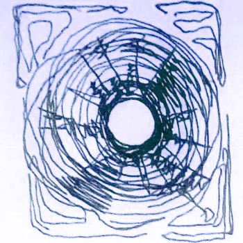

It’s a dark room, and I almost don’t notice it until my flashlight runs over it, but there’s a massive pit in the middle of it. The walls are weird here, sort of lumpy and damp and black, like it’s a cave that’s been forced into the shape of a normal room. This does not seem very safe, and the smart thing to do would be to leave.